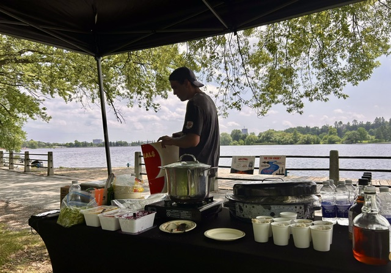
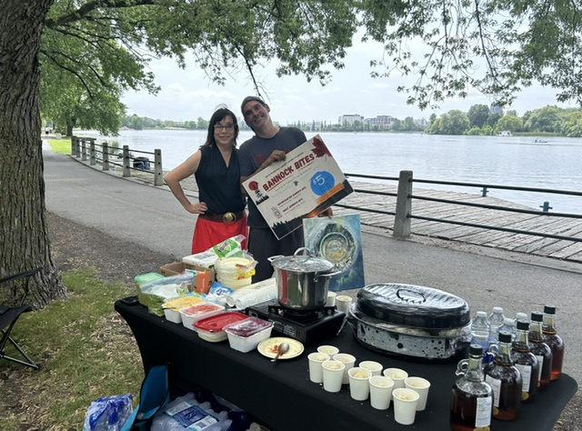
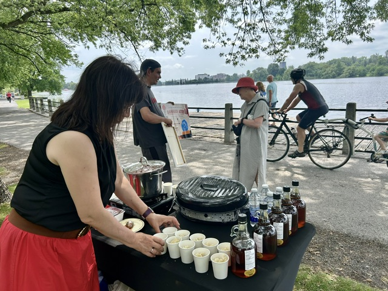
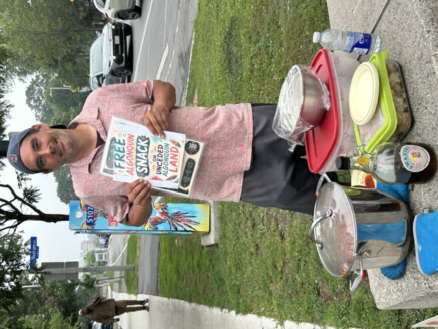
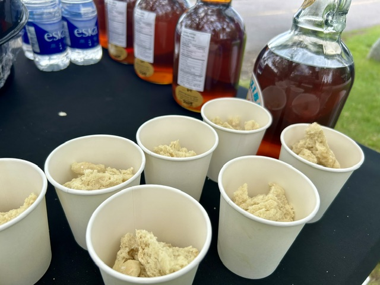
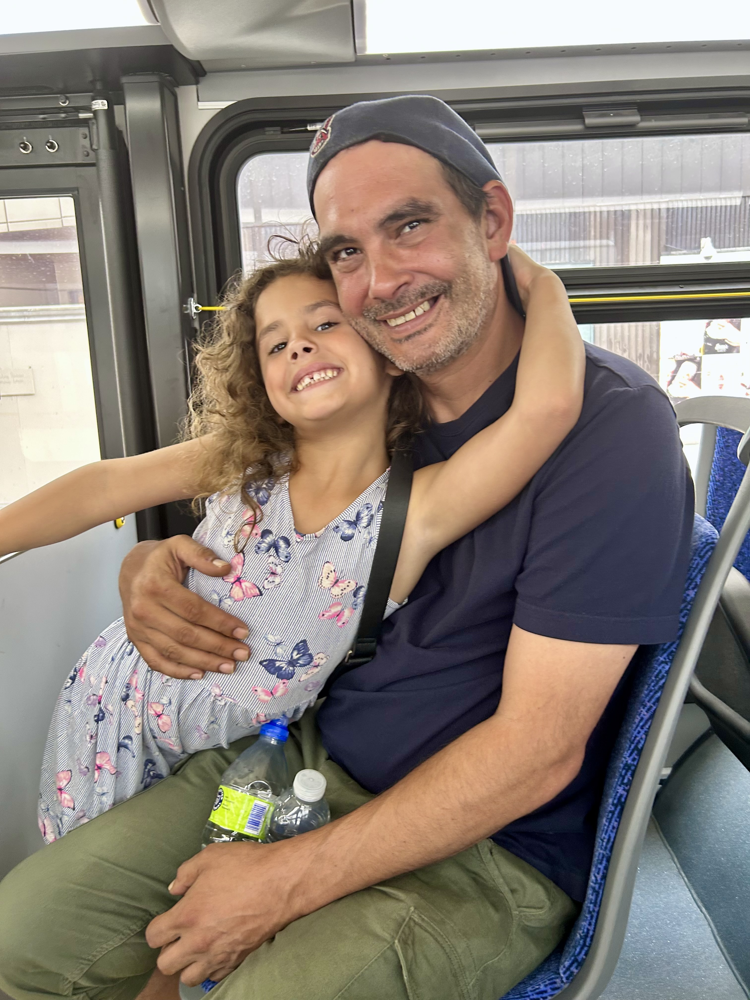
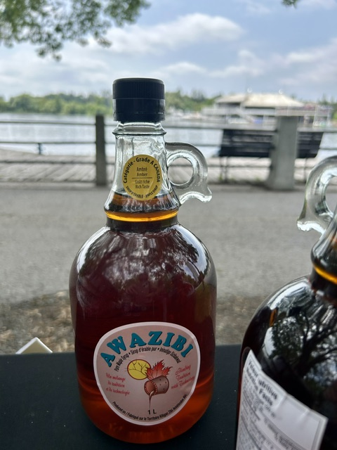

Made Fresh
Small batches, handmade bannock and food prepared with care.
Indigenous-owned. Algonquin-made.
Fresh handmade bannock. Bold flavours. A mobile kitchen rooted in Kitigan Zibi and serving Ottawa.
⌖ From Kitigan Zibi Anishinabeg to Ottawa
Pull up a chair
Chelsea's Kitchen is an Algonquin-owned food company built around one simple idea: good food gives people a reason to slow down, talk and connect.
Small batches, handmade bannock and food prepared with care.
Headquartered in Kitigan Zibi Anishinabeg and proudly serving Ottawa.
Mobile carts, catering and events that turn meals into moments.


The Mobile Cart
Our mobile cart serves festivals, markets, campuses, workplaces and community gatherings across Ottawa. It is compact, flexible and built to create a welcoming experience wherever it goes.
What we make
A focused menu. Big flavour. Food people remember.
 Signature
SignatureFresh baked bannock, savoury filling, crisp toppings and our garlic sauce.
$5 Sweet
SweetWarm bannock, berries and Awazibi maple syrup. Simple, sweet and unforgettable.
$5 Lunch
LunchA larger, hearty version made for campus lunches, workplaces and catered service.
$12Planning for a group? Quantity and event pricing is available.
 Made for your table ♡
Made for your table ♡Catering
From an intimate team lunch to a large community gathering, Chelsea's Kitchen creates food service that feels warm, organized and distinctly different.
Come find us
Follow the cart, meet the team and try bannock made fresh.

First official service



Our Story
Chelsea's Kitchen is named after my daughter. What started as bannock made to feed people became something larger: a way to build connection, represent Kitigan Zibi with pride and create a business rooted in hope.
We call our signature item a Reconciliation Taco because reconciliation does not only happen in institutions. Sometimes it begins when people who may never have spoken end up sharing food.
Food starts conversations. That is enough for us to believe food matters.
Local ingredients
Our Maple Berry Bites feature maple syrup made in Kitigan Zibi. It is not just an ingredient. It is part of where we come from.

Contact Us
Tell us about your event, workplace, campus or community gathering. We will reply with availability and next steps.